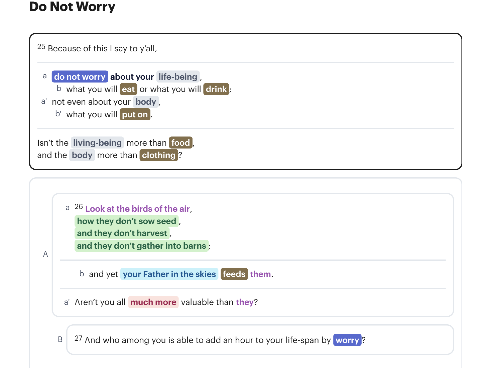
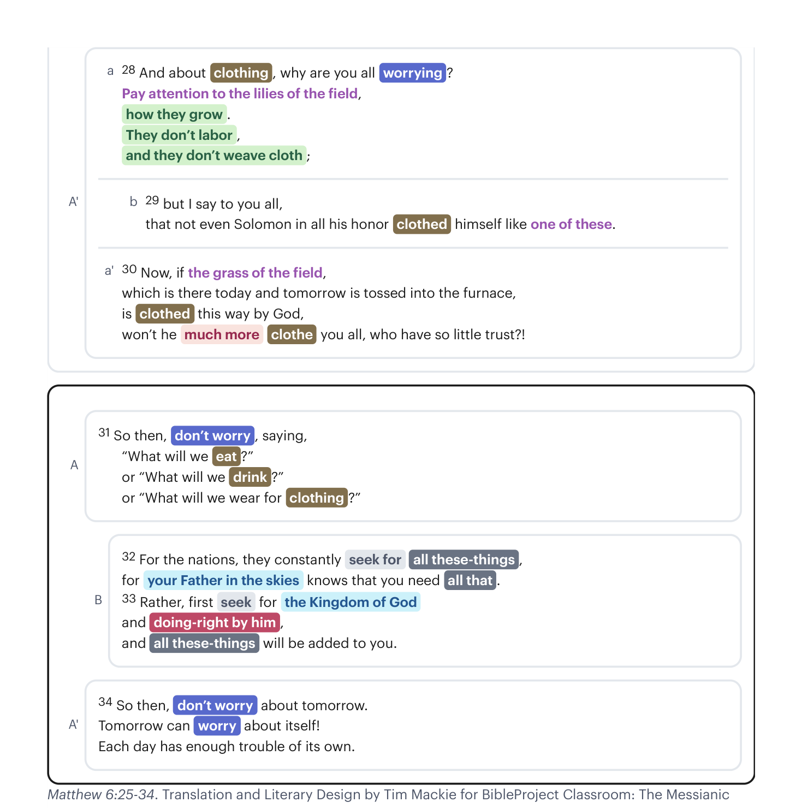

Mateus 6:25-27. Tradução e Design Literário por Tim Mackie para BibleProject Classroom: The Messianic Torah (2024).Matthew 6:25-27. Translation and Literary Design by Tim Mackie for BibleProject Classroom: The Messianic Torah (2024).

Mateus 6:25-34. Tradução e Design Literário por Tim Mackie para BibleProject Classroom: The Messianic Torah (2024).Matthew 6:25-34. Translation and Literary Design by Tim Mackie for BibleProject Classroom: The Messianic Torah (2024).
Estes ditados remontam ao contraste de abertura entre "tesouro na terra ou nos céus". Se o sentido de segurança de alguém se baseia em tesouro terreno, Jesus investiga a psicologia interior e a experiência de basear a sua confiança em tais coisas. Isso produz muita ansiedade. A liberdade da ansiedade está enraizada numa concepção do universo: de que é um lugar seguro onde sou acolhido por um anfitrião generoso. A superabundância que vejo na natureza vem de um criador que mostra essa mesma generosidade para comigo. Essa mentalidade é o que me liberta de uma mentalidade de escassez para liberar recursos aos outros.These sayings go back to the opening contrast between "treasure on the land or in the sky." If one's sense of security is based on earthly treasure, Jesus probes into the inner-psychology and experience of basing one's trust on such things. It produces a lot of anxiety. Freedom from anxiety is rooted in a conception of the universe: that it is a safe place where I'm welcomed by a generous host. The overabundance I see in nature comes from a creator who shows that same generosity towards me. This mindset is what frees me from a scarcity mindset to release resources to others.
Que tipo de tradição forma uma pessoa a falar assim? (Você não pode simplesmente dizer: "Bem, ele é Jesus!") Como uma pessoa é formada que olha para pássaros, flores e grama e vê sinais da generosidade e do amor superabundante de Deus? Estas palavras soam quase irresponsáveis para pessoas do tipo A, trabalhadoras. Com estas palavras, Jesus está articulando uma maneira de ver o mundo que está enraizada nas Escrituras Hebraicas e na sua descrição da generosidade de Deus.What kind of tradition forms a person to speak like this? (You can't just say, "Well, he's Jesus!") How is a person formed who looks at birds and flowers and grass and sees signs of God's generosity and overabundant love? These words sound almost irresponsible to Type-A, hardworking people. With these words, Jesus is articulating a way of seeing the world that is rooted in Hebrew Scriptures and their depiction of God's generosity.
Há também os ditados sábios em Provérbios sobre ajuntar dinheiro suficiente para que se tenha provisão no dia da necessidade.There are also the wise sayings in Proverbs about saving up enough money so that one has provision in the day of need.
6Vai à formiga, ó preguiçoso; observa os seus caminhos e sê sábio;6 Go to the ant, O sluggard, observe her ways and be wise,
7a qual, não tendo chefe, nem oficiais, nem governador,7 which, having no chief, officer or ruler,
8prepara no verão a sua comida e ajunta na colheita a sua provisão.8 prepares her food in the summer and gathers her provision in the harvest.
9Ó preguiçoso, até quando ficarás deitado? Quando te levantarás do teu sono?9 How long will you lie down, O sluggard? When will you arise from your sleep?
10"Um pouco de sono, um pouco de torpor, um pouco de cruzar das mãos para repousar"—10 "A little sleep, a little slumber, a little folding of the hands to rest"—
11assim virá como um vagabundo a tua pobreza, e a tua necessidade como um homem armado.11 your poverty will come in like a vagabond and your need like an armed man.
30Passei pelo campo do preguiçoso e pela vinha do homem falto de senso;30 I passed by the field of the sluggard and by the vineyard of the man lacking sense,
31e eis que estava toda coberta de cardos; a sua superfície estava coberta de urtigas, e o seu muro de pedra estava derribado.31 and behold, it was completely overgrown with thistles; its surface was covered with nettles, and its stone wall was broken down.
32Vi isso, e considerei-o; olhei, e recebi instrução:32 When I saw, I reflected upon it; I looked, and received instruction.
33"Um pouco de sono, um pouco de torpor, um pouco de cruzar das mãos para repousar",33 "A little sleep, a little slumber, a little folding of the hands to rest,"
34também a tua pobreza virá como um salteador, e a tua necessidade como um homem armado.34 then your poverty will come as a robber and your want like an armed man.
O que ajunta no verão é filho que procede sabiamente, mas o que dorme na colheita é filho que procede vergonhosamente.He who gathers in summer is a son who acts wisely, but he who sleeps in harvest is a son who acts shamefully.
O preguiçoso não arou no outono, pelo que pede esmola na colheita e nada tem.The sluggard does not plow after the autumn, so he begs during the harvest and has nothing.
10Tu és aquele que envia as fontes pelos vales; correm por entre os montes.10 You are the one who sends forth springs into the valleys; they flow between the mountains.
11Dão de beber a todo animal do campo; os jumentos selvagens matam a sua sede.11 They give drink for every beast of the field. The wild donkeys ⌊quench⌋ their thirst.
12Junto delas as aves dos céus habitam; dentre os ramos elas ⌊cantam⌋.12 Along them the birds of the heavens abide. From among the branches they ⌊sing⌋.
13Tu és aquele que ⌊rega⌋ os montes desde as suas câmaras altas; a terra farta-se do fruto das tuas obras.13 You are the one who ⌊waters⌋ the mountains from his upper chambers. The earth is full with the fruit of your labors:
14que faz crescer a erva para o gado e plantas para o serviço do homem, para tirar o alimento da terra;14 who causes grass to grow for the cattle and herbs for the service of humankind, to bring forth food from the earth,
15e o vinho que alegra o coração do homem, para que o seu rosto resplandeça do azeite, e o pão que fortalece o coração do homem.15 and wine that makes glad the heart of man, so that their faces shine from oil, and bread that strengthens the heart of man.
16As árvores de Yahweh saciam-se, os cedros do Líbano que ele plantou;16 The trees of Yahweh drink their fill, the cedars of Lebanon that he planted,
17onde as aves fazem o seu ninho; a cegonha tem a sua casa nos ciprestes.17 where birds make their nest. The stork has its home in the fir trees.
A palavra grega usada para "preocupação" aqui é o verbo merimnao (μεριμνάω), relacionado ao substantivo "preocupação" (merimna / μέριμνα). Estas palavras aparecem 25 vezes no Novo Testamento e têm uma gama de significados mais ampla do que a palavra inglesa "worry".The Greek word used for "worry" here is the verb merimnao (μεριμνάω), related to the noun "worry" (merimna / μέριμνα). These words appear 25 times in the New Testament and have a wider range of meaning than the English word "worry."
A palavra merimna pode ter um significado positivo, no sentido de "preocupação" que é apropriada e boa.The word merimna can have a positive meaning, in the sense of "concern" that is appropriate and good.
Espero, pois, no Senhor Jesus enviar-vos em breve Timóteo, para que também eu seja confortado ao saber da vossa condição. Porque não tenho ninguém de igual espírito que se preocupe (merimnao) sinceramente pelo vosso bem-estar.But I hope in the Lord Jesus to send Timothy to you shortly, so that I also may be encouraged when I learn of your condition. For I have no one else of kindred spirit who will genuinely be merimnao for your welfare.
para que não haja divisão no corpo, mas que os membros tenham a mesma preocupação (merimna) uns pelos outros.so that there may be no division in the body, but that the members may have the same merimna for one another.
À parte destas coisas externas, há a pressão diária sobre mim da preocupação (merimna) por todas as igrejas.Apart from such external things, there is the daily pressure on me of merimna for all the churches.
A palavra merimna também pode ter um efeito negativo, conduzindo a mente a uma postura de medo e ansiedade.The word merimna can also have a negative effect, steering the mind into a posture of fear and anxiety.
Não vos preocupeis (merimnao) com coisa alguma; antes, em tudo, sejam conhecidos os vossos pedidos diante de Deus pela oração e súplica, com ação de graças. E a paz de Deus, que excede todo o entendimento, guardará os vossos corações e as vossas mentes em Cristo Jesus.Do not be merimnao about anything, but in every situation, by prayer and petition, with thanksgiving, present your requests to God. And the peace of God, which transcends all understanding, will guard your hearts and your minds in Christ Jesus.
e sereis levados à presença de governadores e reis por minha causa, para lhes servir de testemunho a eles e aos gentios. Mas, quando vos entregarem, não vos preocupeis (merimnao) com o modo ou o que haveis de dizer; porque naquela hora vos será dado o que haveis de dizer.and you will even be brought before governors and kings for my sake, as a testimony to them and to the Gentiles. But when they hand you over, do not merimnao about how or what you are to say; for it will be given you in that hour what you are to say.
E a que caiu entre espinhos, estas são as que, tendo ouvido, seguem o seu caminho e são sufocadas com a preocupação (merimna) e riquezas e prazeres da vida, e não trazem fruto algum a maturidade.The seed which fell among the thorns, these are the ones who have heard, and as they go on their way they are choked with merimna and riches and pleasures of this life, and bring no fruit to maturity.
Cuidai, porém, que os vossos corações não se tornem pesados com glutonaria, embriaguez e a preocupação (merimna) da vida, e aquele dia vos sobrevenha subitamente como um laço.Be careful, or your hearts will be weighed down with carousing, drunkenness and the merimna of life, and that day will close on you suddenly like a trap.
Portanto, o ato de demonstrar preocupação não é negativo em si mesmo. Antes, a boa preocupação se transforma em preocupação não saudável dependendo do grau e do objeto da nossa preocupação. Observe como Paulo usa a flexibilidade desta palavra no mesmo parágrafo.So the act of showing concern is not negative in and of itself. Rather, good concern develops into unhealthy concern depending on the degree and the object of our concern. Notice how Paul uses the flexibility of this word in the same paragraph.
Mas quero que sejais livres da preocupação (merimna). O não casado preocupa-se (merimnao) com as coisas do Senhor, de como há de agradar ao Senhor; mas o que é casado preocupa-se (merimnao) com as coisas do mundo, de como há de agradar a sua mulher, e está dividido. Também a mulher não casada e a virgem preocupa-se (merimnao) com as coisas do Senhor, para ser santa tanto no corpo como no espírito; porém a que é casada preocupa-se (merimnao) com as coisas do mundo, de como há de agradar ao seu marido.But I want you to be free from merimna. One who is unmarried is merimnao about the things of the Lord, how he may please the Lord; but one who is married is merimnao about the things of the world, how he may please his wife, and his interests are divided. The woman who is unmarried, and the virgin, is merimnao about the things of the Lord, that she may be holy both in body and spirit; but one who is married is merimnao about the things of the world, how she may please her husband.